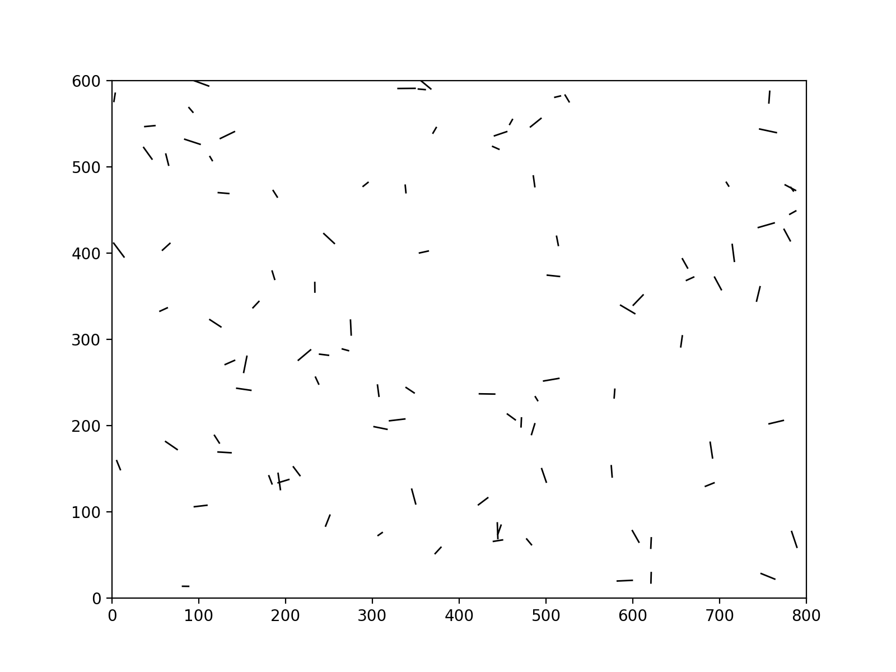

Problem 2
Estimating π Using Monte Carlo Methods
Part 1: Estimating π Using a Circle
1.1 Theoretical Foundation
We imagine a square with side length 2 centered at (0,0), containing an inscribed unit circle (radius = 1).
| Shape | Area Formula | Value |
|---|---|---|
| Square | \( (2)^2 \) | 4 |
| Circle | \( \pi (1)^2 \) | \( \pi \) |
Thus, the probability a random point lands inside the circle:
\[
P(\text{inside circle}) = \frac{\pi}{4}
\]
Rearranging:
\[
\pi \approx 4 \times \frac{\text{Points inside circle}}{\text{Total points}}
\]
1.2 Simulation
Click to expand Python code
import numpy as np
import matplotlib.pyplot as plt
def estimate_pi(num_points, frames=50):
x = np.random.uniform(-1, 1, num_points)
y = np.random.uniform(-1, 1, num_points)
# Create an empty list to store the frames
frames_list = []
for i in range(1, frames + 1):
num_sample = int(i * num_points / frames) # Increase number of points each frame
inside_circle = (x[:num_sample]**2 + y[:num_sample] <= 1)
fig, ax = plt.subplots(figsize=(6,6))
ax.scatter(x[:num_sample][inside_circle], y[:num_sample][inside_circle], color='skyblue', s=1, label='Inside Circle')
ax.scatter(x[:num_sample][~inside_circle], y[:num_sample][~inside_circle], color='salmon', s=1, label='Outside Circle')
# Draw unit circle
circle = plt.Circle((0,0), 1, color='black', fill=False, linestyle='--', linewidth=2)
ax.add_artist(circle)
# Draw square boundary
ax.set_xlim([-1, 1])
ax.set_ylim([-1, 1])
ax.plot([-1, -1, 1, 1, -1], [-1, 1, 1, -1, -1], 'k--', linewidth=2)
ax.set_aspect('equal')
ax.set_title(f'Monte Carlo Estimation of π ({num_sample} points)', fontsize=14)
ax.legend()
# Save the current frame
plt.close(fig) # Prevent display during loop
frames_list.append(fig)
# Save as GIF
gif_filename = 'monte_carlo_pi_estimation.gif'
imageio.mimsave(gif_filename, frames_list, duration=0.1) # 0.1 sec per frame
print(f"GIF saved as {gif_filename}")
# Example usage
num_points = 10000
estimate_pi(num_points, frames=100)
1.3 Visualization
The following animation shows how the points are plotted inside and outside the unit circle as the number of points increases. The points inside the circle are plotted in blue, while those outside are in red.

1.4 Analysis (Convergence Plot)
Click to expand Python code
sample_sizes = [10, 100, 1000, 10000, 100000]
estimates = []
for size in sample_sizes:
pi_estimate, _, _, _ = estimate_pi(size)
estimates.append(pi_estimate)
plt.figure(figsize=(8,5))
plt.plot(sample_sizes, estimates, marker='o', label='Estimated π', color='teal')
plt.axhline(y=np.pi, color='red', linestyle='--', label='Actual π (Reference)')
plt.xscale('log')
plt.xlabel('Number of Points (log scale)')
plt.ylabel('Estimated π')
plt.title('Convergence of π Estimate (Circle Method)', fontsize=14)
plt.legend()
plt.grid(True)
plt.show()
Part 2: Estimating π Using Buffon’s Needle
2.1 Theoretical Foundation
Buffon’s Needle Problem:
- Drop a needle of length \( l \) onto parallel lines spaced \( d \) units apart.
- The needle crosses a line with probability:
\[
P = \frac{2l}{d\pi}
\]
Thus:
\[
\pi \approx \frac{2l \times \text{Number of Drops}}{d \times \text{Number of Crossings}}
\]
2.2 Simulation
Click to expand Python code
import numpy as np
import matplotlib.pyplot as plt
import imageio
def buffon_needle_simulation(num_needles, l=1.0, d=2.0, frames=50):
# Create an empty list to store frames
frames_list = []
centers = np.random.uniform(0, d/2, num_needles)
angles = np.random.uniform(0, np.pi/2, num_needles)
# Create the animation
for i in range(1, frames + 1):
fig, ax = plt.subplots(figsize=(8,6))
# Draw parallel lines
for j in range(-2, 4):
ax.axhline(j * d/2, color='gray', linestyle='--', linewidth=1)
# Plot the first 'i' needles
for j in range(i):
center = centers[j]
angle = angles[j]
x_start = 0
x_end = l * np.cos(angle)
y_start = center
y_end = center + l * np.sin(angle)
color = 'red' if center <= (l/2) * np.sin(angle) else 'blue'
ax.plot([x_start, x_end], [y_start, y_end], color=color)
ax.set_xlim(-1, 2)
ax.set_ylim(-1, d*2)
ax.set_title(f'Buffon’s Needle Simulation ({i} Needles)', fontsize=14)
ax.set_aspect('equal')
# Save the current frame
plt.close(fig)
frames_list.append(fig)
# Save as GIF
gif_filename = 'buffon_needle_simulation.gif'
imageio.mimsave(gif_filename, frames_list, duration=0.1)
print(f"GIF saved as {gif_filename}")
# Example usage
num_needles = 10000
buffon_needle_simulation(num_needles, frames=100)
2.3 Visualization
The following GIF demonstrates the Buffon’s Needle simulation, where needles are dropped randomly and the crossing event is recorded. Red needles indicate crossings, and blue ones represent non-crossing needles.

2.4 Analysis (Convergence Plot)
Click to expand Python code
sample_sizes = [10, 100, 1000, 10000, 100000]
estimates = []
for size in sample_sizes:
pi_estimate, _, _, _ = buffon_needle_simulation(size)
estimates.append(pi_estimate)
plt.figure(figsize=(8,5))
plt.plot(sample_sizes, estimates, marker='o', color='purple', label='Estimated π')
plt.axhline(y=np.pi, color='red', linestyle='--', label='Actual π (Reference)')
plt.xscale('log')
plt.xlabel('Number of Needles (log scale)')
plt.ylabel('Estimated π')
plt.title('Convergence of π Estimate (Buffon’s Needle)', fontsize=14)
plt.legend()
plt.grid(True)
plt.show()
Conclusion
| Method | Circle Sampling | Buffon's Needle |
|---|---|---|
| Simplicity | Very simple setup | Slightly more complex |
| Convergence Rate | Faster | Slower |
| Implementation | Straightforward random sampling | Requires geometry (angles/centers) |
| Historical Value | Popular in early MC simulations | Historically significant (1733) |